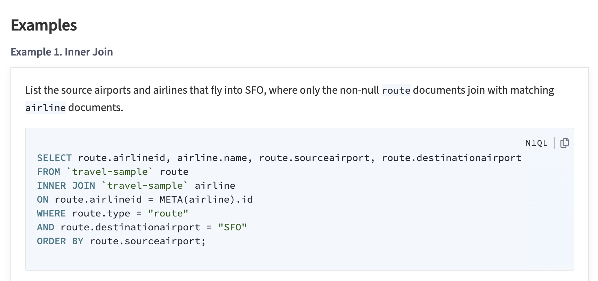

Couchbase Server
Couchbase Server is an open source, distributed, JSON document database. It exposes a scale-out, key-value store with managed cache for sub-millisecond data operations, purpose-built indexers for efficient queries and a powerful query engine for executing SQL-like queries. For mobile and Internet of Things environments Couchbase also runs natively on-device and manages synchronization to the server.

Get Started
Concepts
Installation
Develop
CRUD Operations
Transactions & Durability
Data Modeling
Services
Data Service
Index Service
Query Service
Search Service
Analytics Service
Eventing Service
SDKs
Java SDK
Scala SDK
C SDK
Python SDK
Administration and Tools
Cluster Management
Monitoring and Logging
REST API and Tools
Quick Links
Project Docs